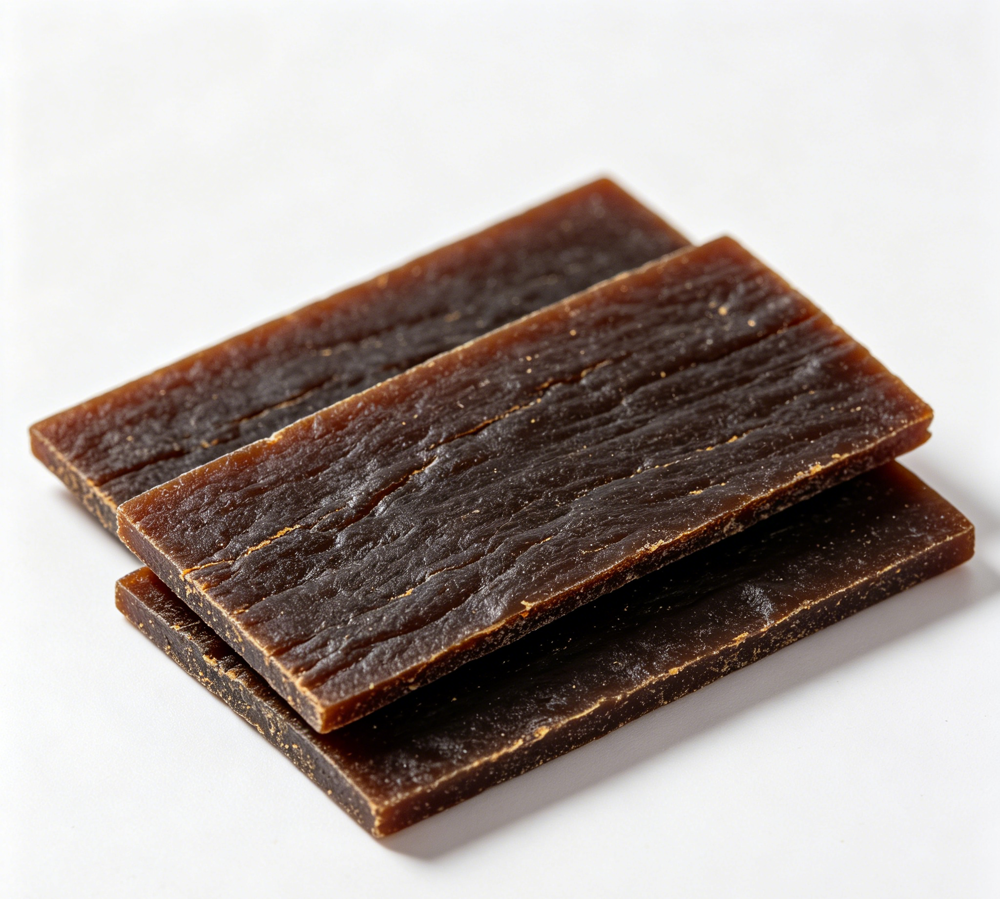

📋 基本信息
中文名阿胶
拉丁名Equus asinus L.
英文名Colla Corii Asini
产地科：马科（Equidae）；属：马属（Equus）；来源动物拉丁学名：Equus asinus L.。主产于山东省（东阿县为传统道地产区）、浙江省等地。
性状本品呈长方形块、方形块或丁状。棕色至黑褐色，有光泽。质硬而脆，断面光亮，碎片对光照视呈棕色半透明状。气微，味微甘。【来源：《中国药典》2020年版一部】
用法用量3～9g。烊化兑服。【来源：《中国药典》2020年版一部】
贮藏密闭。【来源：《中国药典》2020年版一部】
☯ 传统属性
四气平
五味甘
归经肺、肝、肾经
功能主治补血滋阴，润燥，止血。用于血虚萎黄，眩晕心悸，肌痿无力，心烦不眠，虚风内动，肺燥咳嗽，劳嗽咯血，吐血尿血，便血崩漏，妊娠胎漏。【来源：《中国药典》2020年版一部】
禁忌症2020年版《中国药典》未单列注意事项。本品性质黏腻，有碍消化，脾胃虚弱、消化不良、大便溏泄者慎用；感冒病人不宜服用。【来源：中医药权威工具书综合整理】
毒性本品滋腻碍胃，过量或脾胃虚弱者服用易出现腹胀、食欲不振、消化不良；新制阿胶“火气”较大，个别人服用后见口干、咽痛等上火表现；少数人可能有胃肠道过敏反应。
适宜体质阴虚质
适宜证型阴虚证、肺阴虚证、胃阴虚证
🔬 现代研究
主要成分主要为驴皮胶原蛋白（明胶原、骨胶原）及其水解产生的多肽和氨基酸，含甘氨酸、L-羟脯氨酸、L-脯氨酸、丙氨酸、赖氨酸、精氨酸等多种氨基酸（含多种人体必需氨基酸）；尚含硫酸皮肤素、生物酸及钙、铁、锌、铜等微量元素。2020年版《中国药典》以L-羟脯氨酸、甘氨酸、丙氨酸、L-脯氨酸4种氨基酸及驴源特征多肽A1、A2为法定质量指标。【来源：《中国药典》2020年版一部及公开科研文献整理】
药理作用公开实验研究报道本品具有促进造血功能（升高红细胞与血红蛋白）、缩短凝血时间（止血）、抗休克、耐缺氧、耐寒冷、抗疲劳、增强免疫功能、增加体内钙摄入量、促进骨愈合、抗辐射、增强记忆等作用，与其补血滋阴、润燥止血的传统功效相对应。【来源：公开科研文献综述整理】
食疗功效补血滋阴、润燥止血，与人参、鹿茸并称“滋补三宝”。传统用于血虚萎黄、眩晕心悸、肺燥咳嗽及妇人调经养血的滋补膳食，代表食疗方为阿胶固元膏、阿胶炖红枣等。
食养禁忌
🏭 产品形态与潜在功能
推荐形态
粉末胶囊提取物
潜在功能